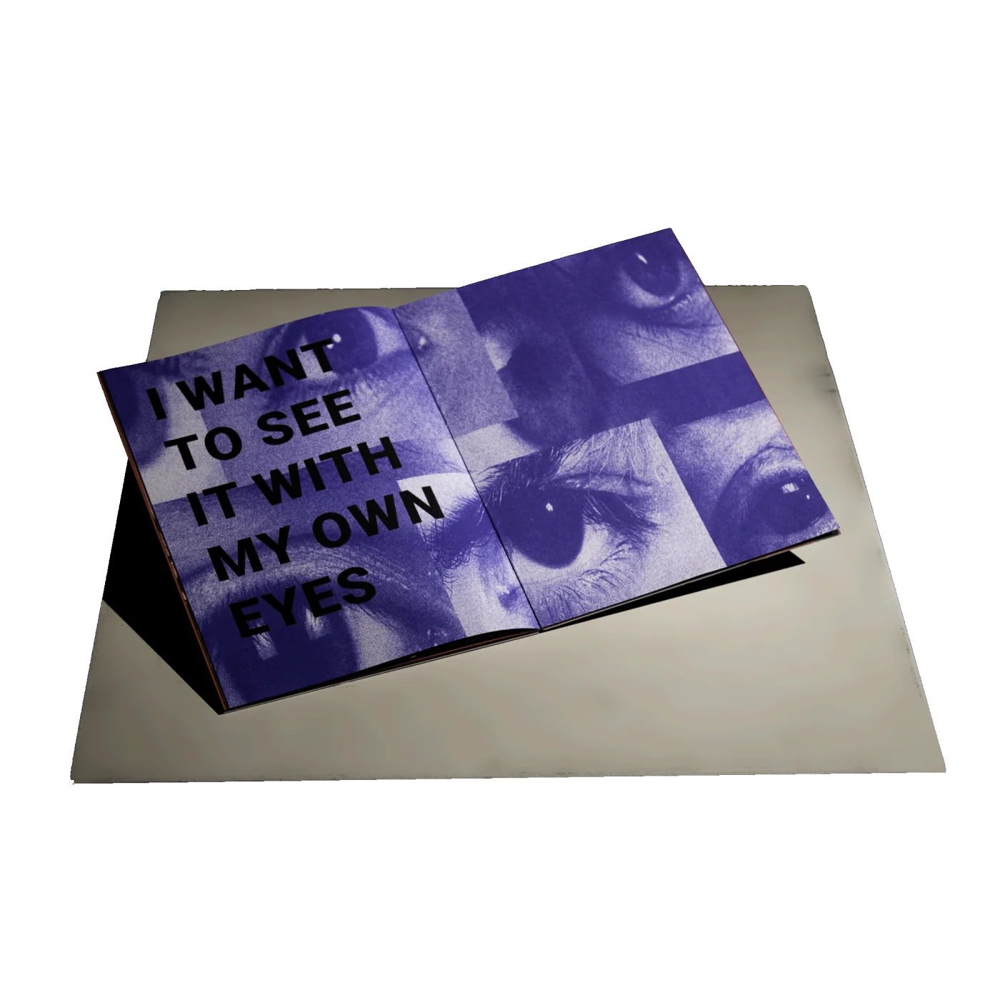

Escape the Skinner Box

"Ik wil het met eigen ogen zien."
Ik ben verslaafd aan sociale media, vooral Instagram reels lijken vat te hebben op mijn aandacht. Vaak heb ik geprobeerd om te stoppen met het doomscrollen van mijn dagen, zonder veel succes. Na herhaaldelijk terug te vallen in oude patronen, begon ik me af te vragen wat er achter die gewoonte schuilgaat: waarom besteedt zo'n groot deel van de mensen zo veel tijd online?
Ik begon dit project als een vorm van persoonlijke interventie. Met grafisch ontwerp, mijn fotografiearchief en deskresearch maakte ik een publicatie als herinnering aan mezelf om waarom het ertoe doet om mijn aandacht terug te winnen. Mijn hoop is dat mensen die met vergelijkbare situaties worstelen hier wat bewustwording uit kunnen halen.
Blader door de hele zine, online.
De volledige publicatie is te bekijken als interactieve PDF
Open publicatie